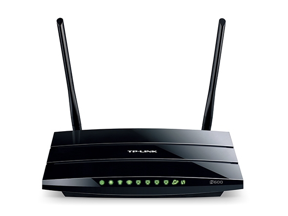

TP-Link
These supported devices are manufactured by TP-Link.
| Model | WDR3600 | WDR4300 |
| CPU Speed | 560 MHz | 560 MHz |
| Flash | 8192 KiB | 8192 KiB |
| RAM | 128 MiB | 128 MiB |
| LAN Ports | 4 | 4 |
| WAN Ports | 1 | 1 |
| USB Ports | 2 | 2 |
| 802.11b | Yes | Yes |
| 802.11a | Yes | Yes |
| 802.11g | Yes | Yes |
| 802.11n | Yes | Yes |
| 802.11ac | No | No |
| 2.4GHz | 300Mbps | 300Mbps |
| 5GHz | 300Mbps | 450Mbps |
| Antenna type | external | external |
| Antenna qty | 2 | 3 |
| Antenna connection | RP-SMA | RP-SMA |
| Approximate Cost |
WDR3600
The WDR3600 has not been tested on the CorbinMesh yet, but it’s very similar to the WDR4300, but without the center antenna. This AP is very similar to WDR4300, which has three instead of only two antennas.
If you can you might as well buy the WDR4300, it’s probably only a few dollars more.

WDR4300
The WDR4300 makes an excellent AP to use indoors for connecting to CorbinMesh. This AP is very similar to WDR3600, which has only two instead of three antennas.